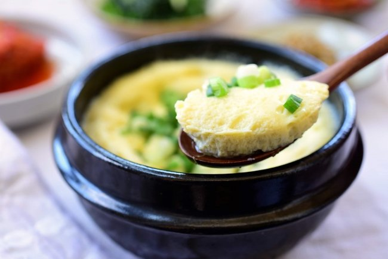

Korean Steamed Eggs

Description
Do you love eggs? Do you hate when they're hard boiled and taste like rubber?
If you said yes to the previous questions then look no further! Steamed eggs are
an incredibly simple, yet tasty dish that will blow your mind. This dish uses
steam to cook the eggs resulting in an incredibly smooth, rich, and dare I say
eggselent experience.
Ingredients
- 3 large eggs
- 1 1/2 tsps of salt
- 2 tbsps of hot water
- 1 cup of milk
- microwave safe bowl
- cling wrap
- microwave
Steps
- Mix the hot water and the salt into the bowl to dissolve all the salt
- Crack the eggs into the salt water and beat until the eggs are one color
- Pour the milk into the bowl and mix vigorously until the mixture is a single color
- Once the ingredits are mixed well, cover the bowl tightly with the cling wrap
- Poke a small hole in the center of the cling wrap to allow steam to escape during the cooking process
- Place the bowl in the microwave and microwave on high for 5 minutes and 30 seconds
- Once the timer goes off, remove from microwave and let sit for 1 minute
- Carefully remove cling wrap and enjoy with rice